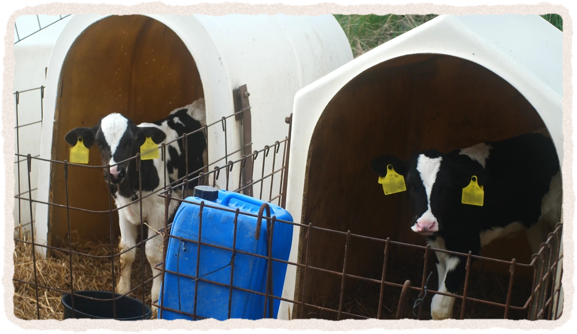

Kolektiv pro zvířata · vzorník stylu
Grafický manuál
Barvy
růžová
#E05D73
teal
#115C61
tmavý teal
#0B3F43
krémová
#EFE4DD
oranžová
#D26C11
vínová
#920637
hořčicová
#D38F03
kresby, nálepky #17323D
malinová #C63F58
zelená jen v logu
Vínová = problém, krutost · teal = alternativa · oranžová = zvýraznění slova · hořčicová = čísla kapitol
Nadpis z bloků · Bebas Neue verzálky
Krabice mléka
z obchodu
začíná porodem.
Kapitola, štítky, schéma
1Hygiena
Neutrální štítek
Tzv. masné krávy: prostor
Odebrat tele
Společenské zvíře
Výstřižek fotky

Ilustrační záběr
Utržený krémový okraj, stín, čísla známek rozostřená.
Zdroj: řádek u každého tvrzení – Inter tučně 21 px, jen po dobu tvrzení (Staněk et al. 2014, VÚŽV)